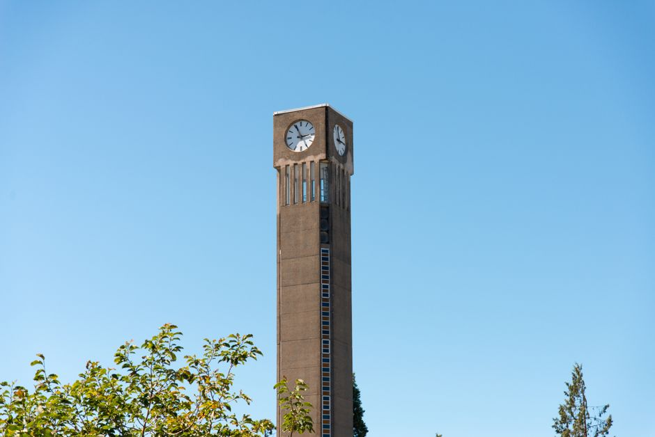

ThemeScheme is partnered with the University of British Columbia’s Museum of Anthropology. Coming from MoA’s education department, Amina Chergiu will serve as an educational specialist on the project, ensuring that content is developmentally appropriate and aligned with standardized curriculum goals. Additionally, we are partnering with teachers and students at University Hill Secondary School — a 8-12 grade school located on UBC’s campus — to pilot the program before its official launch. Linda Norris will serve as an assessment specialist and will evaluate the success of the project.